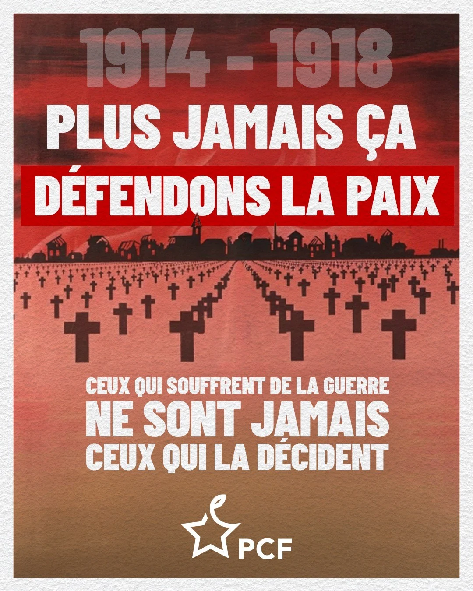

Commémoration
11 Novembre. Le souvenir de la guerre nous oblige à défendre la paix
Date indiquée par Facebook · 11 novembre 2025
Repères éditoriaux
Le 11 novembre 2025, nous avons rappelé le prix payé par les peuples pendant la Première Guerre mondiale. Se souvenir de l’Armistice, c’est aussi défendre aujourd’hui la paix, la coopération entre les peuples et le progrès social.
Texte conservé avec la publication
Aujourd’hui la France commémore l’Armistice du 11 novembre 1918.
Près de 20 millions d’hommes et de femmes sont morts dans ce premier conflit mondial, sacrifiés pour des intérêts qui n’étaient pas les leurs.
Des tranchées de la Somme aux champs de bataille d’aujourd’hui, les peuples paient toujours le prix sanglant des guerres et des impérialismes.
En Europe et partout dans le monde, les guerres se multiplient et les morts s’amoncellent… à nouveau.
Des engrenages fatals pourraient conduire l’humanité à une nouvelle guerre mondiale, plus terrible encore que les deux précédentes.
✊ Nous devons mettre l'exigence de paix au cœur de tous nos efforts, de toutes nos revendications.
C'est l'ADN du PCF, car ceux qui souffrent de la guerre ne sont jamais ceux qui la décident.
🕊️ Pas de progrès social sans paix, et pas de paix tant que la misère condamnera des centaines de millions d'êtres humains à la survie.

Sources
Archive rouge · export Facebook · AR-0002-FB-00961
À lire aussi · Désarmement nucléaire. Une lettre ouverte demande à la France de signer le traité